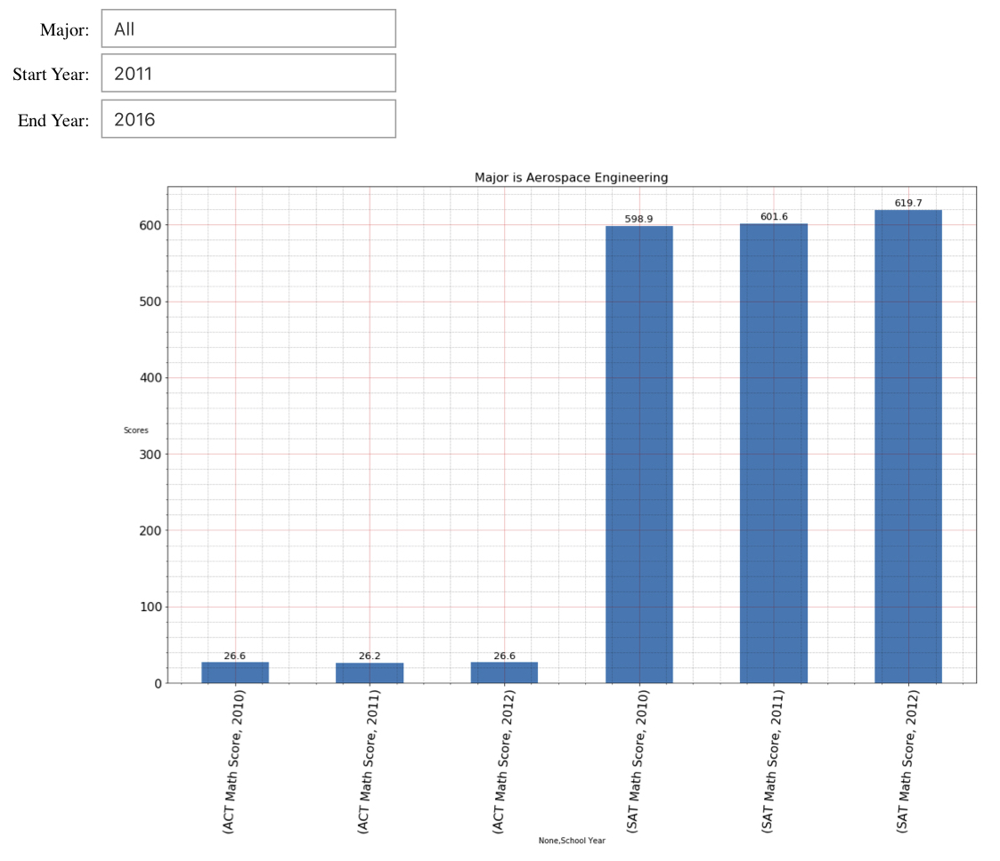

Student vs Year
Enrollment Year vs Student number with different races
Score vs Major:
Female Average SAT & ACT Math Score base on Years and Major
This figure is just an overview and the widget is unfunctional. The full code is attached in the link below.

5th Asian Female:
5th Asian Female Student/School year
Part Six:
Anscombe I

Part Six:
Anscombe II